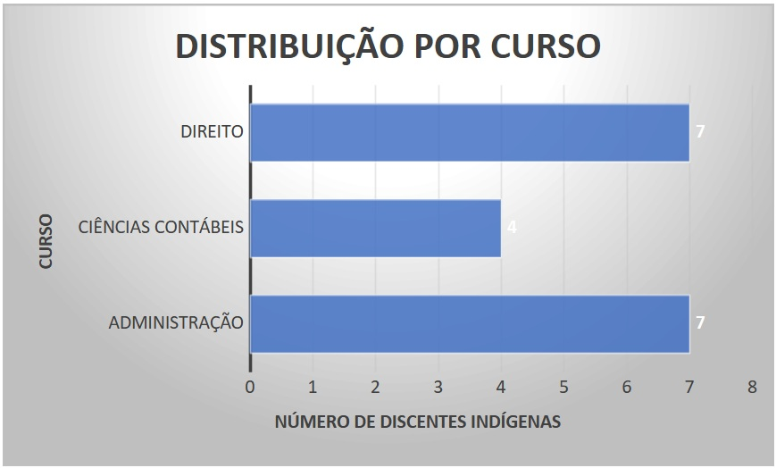
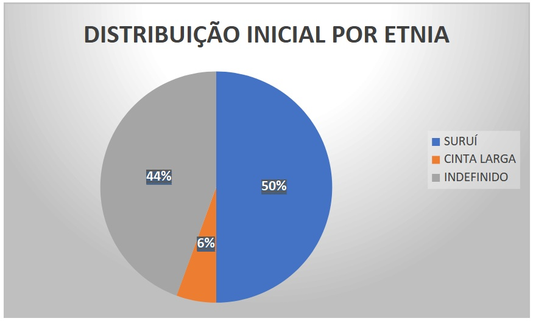

Palestra de abertura do GT 7 – Populações tradicionais, ambiente e ativismo
ACESSO E PERMANÊNCIA DE DISCENTE INDÍGENAS NA UNIR DE CACOAL
Profa. Dra. Carolina de Albuquerque1
1 Doutora em Direito Político e Econômico pela Universidade Presbiteriana Mackenzie (2021) e Doutora em Ciências (Ambiente e Sociedade) pelo PPGI em Ecologia Aplicada (Esalq/CENA) da Universidade de São Paulo - USP (2017), Mestre em Direito pela Universidade Metodista de Piracicaba - Unimep (2006), Especialista em Direito Constitucional pela Pontifícia Universidade Católica de Campinas - PUCCamp (2004) e Bacharel em Direito pela Universidade de Mogi das Cruzes - UMC (2002). Professora da Faculdade de Direito da Universidade Federal de Rondônia (UNIR), Docente Permanente do Programa de Pós-Graduação em Ciências Ambientais (PGCA/UNIR), líder do Grupo de Pesquisa Difusa/Unir/CNPq e Coordenadora do Projeto de Extensão Acesso, permanência e inclusão de discentes indígenas na Universidade Federal de Rondônia, no campus de Cacoal.
Introdução
Esta palestra se divide em 3 grandes partes: i. as inspirações – ou situações e reflexões – que levaram a criação do projeto “Acesso, permanência e inclusão de discentes indígenas na Universidade Federal de Rondônia, no campus de Cacoal”; ii. as transpirações – ou dificuldades e desafios – para a instrumentalização do projeto dentro do campus e iii. os resultados e discussões – ou do andamento do projeto e, também, dos novos desafios e do novo contexto do acesso, permanência e inclusão dos indígenas no campus ao final deste projeto, e perspectivas para novas ações extensionistas em parceria com a comunidade indígena local.
Inspirações
Tomei posse no Departamento de Direito da Universidade Federal de Rondônia em março de 2022. Logo que cheguei fui alocada na Disciplina de Direito Indígena e me deparei com vários discentes indígenas pelo Campus – diferentemente da minha realidade em instituições de ensino em São Paulo (capital – Universidade Nove de Julho, Campinas –Mackenzie e Piracicaba – Unimep) e Minas Gerais (Poços de Caldas – PUC Minas). Tal situação fez com que eu me debruçasse de forma metódica sobre a história e direitos das comunidades indígenas no Brasil, especificamente, em Rondônia.
O quadro foi assustador. Genocídio e Etnocídio marcam a história dos povos indígenas no Brasil. Isso me levou a considerar realizar projetos de pesquisa e de extensão para as comunidades indígenas locais, principalmente os Paiter Suruí e os Cinta Larga.
Antes que eu pudesse refletir sobre como instrumentalizar esse interesse, fui procurada por representantes da Saúde Indígena em razão da necessidade de capacitar seus servidores para o trato com os indígenas nas comunidades, conscientizando-os sobre questões culturais, linguísticas e, principalmente, direitos desses grupos.
O DSEI Vilhena é órgão responsável pela saúde indígena de 146 aldeias e 11 etnias, que abrange os estados Rondônia e Mato Grosso e criamos um curso on-line sobre Direitos das Comunidades Indígenas e Interculturalidade, voltado aos profissionais que atuam dentro dos Polos Base, localizados em Cacoal/RO, Vilhena/RO, Juína/MT e Aripuanã/MT.
Para tentar realizar uma ampliação da consciência dos servidores, no mesmo ano, apresentei o projeto de extensão intitulado “Direitos das Comunidades Indígenas e interculturalidade”. O curso foi parte do programa de Educação Permanente do DSEI, e se constituiu por 5 aulas gravadas no Polo Base de Cacoal, com o objetivo principal de aparar arestas no trato dos servidores públicos com a comunidade indígena.
Simultaneamente, na busca de informações e capacitação, participei do Núcleo de Estudos Interpretar e Transformar o Brasil, da UFMG, coordenado pelo professor Gustavo Seferian, sobre Lutas indígenas e direitos. O interessante nessa experiência foi, principalmente, as leituras do material disponibilizado que coordenavam textos com proposições críticas e transformadoras da sociedade brasileira; realizavam diálogos entre intérpretes clássicos e contemporâneos do Brasil, e consideravam classe, gênero e raça.
Dentro desse processo, ao final de 2022, realizamos a proposição do projeto de extensão: “Reconhecendo nossos direitos territoriais”, em parceria com a comunidade indígena Paiter Suruí, realizado na Linha 10, km 60, na Aldeia Iratana, em Cacoal-Rondônia, na Terra Indígena Sete de Setembro. Nesse projeto me vi inserida em uma lógica diferente, trabalhando e dando aulas de Direito dentro da comunidade indígena, dialogando com suas lideranças e com seus indivíduos e passando a entender um pouco melhor as peculiaridades da comunidade.
Os Suruí de Rondônia se autodenominam Paiter, que significa “gente de verdade”, “nós mesmos”, falam uma língua do tronco linguístico Tupi e da família linguística Mondé e se fixaram no estado vindos da região do Mato Grosso, fugindo de perseguições.
A Terra Indígena Sete de Setembro está localizada em uma região fronteiriça, ao norte do município de Cacoal (estado de Rondônia) até o município de Aripuanã (estado do Mato Grosso). Chega-se à área a partir de Cacoal, através das linhas de acesso 7, 8, 9, 10, 11, 12 e 14, pelo fato das aldeias estarem distribuídas ao longo dos seus limites, tanto por questões de segurança quanto de aproveitamento de antigas sedes de fazendas deixadas por invasores que se estabeleceram dentro da área nas décadas de 70 e 80.
A denominação de “linhas” é corrente na região, proveniente da marcação dos lotes dos projetos de colonização e expansão fronteiriça, e são basicamente estradas que dão acesso a lugares anteriormente inacessíveis, ao mesmo tempo em que marcam geograficamente a área. A Terra Indígena Sete de Setembro é banhada pela bacia do rio Branco, afluente do rio Roosevelt e que se forma a partir da junção dos rios Sete de Setembro e Fortuninha. Os principais afluentes do rio Branco que drenam a área são o Ribeirão Grande, rio Fortuninha e o Fortuna, na margem direita. Na margem esquerda há os rios Igapó (nomeado pelos Paíter), rio São Gabriel e outros sem denominação em carta topográfica do IBGE.
O primeiro contato de fato registrado, só foi feito no ano de 1969, por meio dos sertanistas Francisco Meirelles e Apoena Meireles, no acampamento da FUNAI Sete de Setembro.
Nesta realidade, nosso projeto de extensão faz parte de um esforço da própria comunidade indígena, que apenas contou com o apoio técnico da universidade, vez que realizou toda a logística, transporte e alimentação nos eventos. Além disso, o projeto se insere entre outros projetos efetivados pela comunidade. Os projetos anteriores ao nosso projeto se vinculam a ampliação de monitoramento de invasões das terras indígenas (principalmente com drones) e desenvolvimento de uma agroindústria de Babaçu (com a estrutura física construída, mas ainda pendente de licença para implementação – com projetos que a viabilizem já em curso).
O projeto “Reconhecendo nossos direitos territoriais” responde a uma demanda dos Paiter Suruí, encaminhado pela sua Associação por Isaque e Marli Suruí, que surgiu durante a execução dos projetos de implantação do monitoramento territorial e na regularização da extração do Babaçu. Isso porque a comunidade percebeu que não tinha uma visão sobre os direitos que a própria legislação estatal conferia a sua comunidade. Assim, naquele momento, a busca da comunidade indígena era por ampliar sua organização política e jurídica, conhecer seus direitos e entender as formas de implementação desses direitos, se utilizando de mecanismos do Estado, como Defensoria Pública, Ministério Público e Judiciário, principalmente.
Durante os encontros, percebemos duas demandas importantes: uma de conhecimento e acesso a políticas públicas, principalmente municipais e de viabilidade de acesso e permanência dos jovens indígenas nas instituições de nível superior, sendo relatadas as dificuldades amplas desse grupo de estudantes, como deslocamento ou moradia nas cidades, acesso a língua portuguesa, acompanhamento de aulas mais técnicas e inserção social na universidade, entre outros.
Para o conhecimento e acesso a políticas públicas locais como desconto em passagens de ônibus, pagamento subsidiado de refeições na cidade de Cacoal etc., realizamos uma palestra específica dentro do projeto “Reconhecendo nossos direitos territoriais”, em que uma acadêmica, Eunice Martelo, apresentou os projetos, baixou aplicativos para os interessados e realizou cadastros para o acesso a políticas de interesse de cada um.
Foi-me posteriormente direcionada uma disciplina no Programa de pós Graduação em Ciências Ambientais da UNIR de Rolim de Moura, com o objetivo de: desenvolver habilidades de análise crítica sobre o direito indígena, o direito indigenista, os direitos constitucionais protetivos das comunidades indígenas e da natureza e das consequências socioambientais das obras de infraestrutura e exploração econômica em terras indígenas.
Foram organizadas aulas para propiciar o conhecimento teórico dos conceitos fundamentais do Direito Indígena; ressaltando seus direitos humanos e fundamentais e sua Dignidade; apresentar os instrumentos teóricos necessários para a análise da questão indígena de forma comprometida com os parâmetros jurídicos que estabelecem direitos fundamentais gerais e especiais direcionados aquela comunidade.
Nessa oportunidade convidamos a Mestre em Matemática, Marli Suruí, para apresentar as dificuldades de acesso e permanência dos indígenas na Universidade e o discente de Contabilidade Pablo Suruí, para falar sobre as questões culturais dos Paiter, especificamente sobre as pinturas corporais.
Ainda, fui designada pela Direção do Campus para participar da Comissão para análise e verificação da autodeclaração indígena e de Declaração de Vínculo com Comunidade Indígena Brasileira. A ação antecedeu a criação das bancas de heteroidentificação da Universidade, necessárias à efetividade da política de cotas indígenas, agora implantadas. Os desafios foram imensos, sob o escrutínio do Ministério Público Federal deveríamos criar um espação para dar condições de acesso à Universidade para os indígenas e buscar impedir que candidatos não indígenas tivessem acesso às vagas direcionadas para as cotas (principalmente nos Cursos de Medicina e Direito, os mais concorridos na Universidade).
E a última e importante inspiração foi a participação na Escola São Paulo de Ciência Avançada AMAZONIA Sustentável e Inclusiva, financiado pela FAPESP, vinculado à Unicamp e ao Projeto Biota, para qualificação e fomento de parcerias internacionais e interinstitucionais, no intuito de desenvolver atividades vinculadas a Inclusão e Sustentabilidade na Amazônia.
Nessa oportunidade, foram criados grupos de trabalho e meu grupo optou por escrever o White paper “Inclusion, access, and retention of Indigenous students in university: reflections on potential improvements for the University of the State of Amazonas”, que realiza uma revisão integrativa das ações da UFAM na busca por acesso e permanência de indígenas em suas fileiras, as dificuldades e demandas, assim como as oportunidades para efetividade dos direitos dessas populações dentro da Universidade.
Fizemos também um produto de divulgação científica (no nosso caso, uma charge, de minha autoria, disponível no capítulo do livro) e um plano de divulgação dos dois produtos. Além disso, escrevemos um texto jornalístico para divulgar e dar visibilidade aos resultados de nossos trabalhos sobre acesso e permanência de indígenas na Universidade, para a Revista Nexo, sendo que essa atividade é fundamental para ampliar o interesse pela Ciência e o acesso a matérias comprometidos cientificamente.
Tudo isso nos inspirou a pensar ações a serem realizadas em conjunto com a comunidade indígena local para a proteção de discente indígenas na Universidade.
Transpirações
Toda essa proximidade com a comunidade e, com a forte percepção de que era necessário realizar ações que ampliassem as condições de acesso e permanência dos indígenas nas universidades federais, foi criado o Projeto objeto desta apresentação.
Essa ação só foi possível em razão de todas as ações anteriormente narradas e do comprometimento, tanto de minha parte, como da parte da comunidade Paiter Suruí, e dos membros do Grupo de Pesquisa Difusa, que, juntos, buscaram entender e dar respostas mais eficazes para as demandas das comunidades dentro da Universidade.
Assim nasceu o projeto: “Inclusão, acesso e permanência de estudantes indígenas na Universidade Federal de Rondônia, no Campus de Cacoal” a ser desenvolvido neste ano de 2024 com a alocação de dois bolsistas PIBEC, sendo um deles, Pablo Suruí, da comunidade indígena, e outra, Isabela Simão, com formações em informática, para: entender o panorama do atual estado, desafios e potenciais soluções relativos à inclusão, acesso e permanência de estudantes indígenas na Universidade de Rondônia, em Cacoal, tudo isso com a ação efetiva dos indígenas, principalmente dos parceiros Isaque, Marli e Pablo Suruí, sem os quais nenhuma das ações narradas aqui seria possível, eficaz ou adequada.
O projeto inicia-se com o levantamento dos indígenas matriculados nos cursos na UNIR de Cacoal: Direito, Administração, Ciências Contábeis e Engenharia de Produção. São 18 (dezoito) discentes ativos e um participante do processo seletivo em andamento (este para o Curso de Direito). Em pesquisa inicial junto as secretarias, os resultados são os seguintes:
 
Iniciamos as pesquisas bibliográficas sobre a realidade de Rondônia e estamos elaborando questionário e organizando rodas de conversas para entender a realidade local antes de criar instrumentos que busquem sua alteração.
Assim, os levantamento iniciais devem nos dar uma perspectiva de universitários indígenas em relação às temáticas de interesse para a construções de soluções para a ampliação de acesso e permanência de indígenas na UNIR, incialmente no Campus de Cacoal, com a intencionalidade de após, realizarmos a ampliação para outros campus da Universidade.
São quatro categorias de interesse para análise da situação atual e busca conjunta de soluções: (i) Acesso à universidade; (ii) Permanência; (iii) Discriminação contra estudantes indígenas no ambiente universitário; (iv) O conhecimento indígena e tradicional no contexto universitário.
Serão buscadas pautas já iniciadas pelos movimentos estudantis (se houverem) para uma colaboração direta. Entendemos que o projeto pode contribuir com reflexões e ações de indivíduos e coletivos comprometidos com a inclusão, o acesso e a permanência dos indígenas na universidade, devendo-se considerar que seu desenvolvimento se dá em parceria com o Grupo de Pesquisa Difusa - Direitos Fundamentais e Sociedade na Amazônia Brasileira.
De fato, após a verificação e seleção das problemáticas principais, os instrumentais do grupo serão utilizados para a construção de métodos e formatos de solução de problemas, mas também serão chamados a contribuir, para a ampliação da efetividade desse projeto os tomadores de decisão da Universidade e os servidores em contato direto com a comunidade discente indígena: Coordenações, Chefias de Departamento, Setor Administrativo, Reitoria, Pró-reitorias, docentes e discentes.
Mas apenas boas intenções não bastam. São necessários projetos e práticas para, conforme Corbetta (2021): (1) fixar orçamento para ações de promoção da educação intercultural; (2) formar docentes; (3) promover pesquisas em línguas e saberes indígenas; (4) definir currículos que incorporem a pluralidade de conhecimentos e epistemologias; (5) criar de materiais didáticos inclusivos; (6) efetivar a participação dos povos indígenas na concepção, planejamento, monitoramento e avaliação das políticas associadas à educação intercultural. A ação está comprometida com todos esses eixos.
Além disso, necessário um espaço de diálogo para que os estudantes indígenas do Campus de Cacoal possam pensar e propor políticas de acesso e de permanência para estudantes indígenas, acompanhamento do processo de inscrição, matrícula e ingresso de estudantes indígenas etc. Assim, a busca é por realizar, com a colaboração de bolsistas PIBEC: - estudos sobre a questão indígena no Estado de Rondônia e na UNIR; - estudos sobre experiências exitosas de acesso e permanência de indígenas tanto em outros campus da UNIR como em outras Universidades; - estabelecimento de contato e disponibilização de espaço para a abertura do diálogo com os alunos indígenas do campus de Cacoal; - levantamento das demandas dos estudantes indígenas na Unir de Cacoal; - assessoramento das atividades de matrícula dos ingressantes pelos bolsistas PIBEC; - assessoramento para rematrículas e requerimentos junto aos departamentos pelos bolsistas PIBEC; - reuniões periódicas com os membros do projeto e a comunidade indígena; - capacitação dos docentes do campus; - sensibilização de toda a comunidade universitária para a questão indígena na universidade.
Resultados e Discussões
O projeto está no início e as diretrizes e variáveis serão detalhadas quando da apresentação dessa palestra, em outubro deste ano de 2024, vez que ela visa realizar um fechamento e compartilhamento de informações, logo após o término dos trabalhos executados no projeto de extensão. Além disso, essa nova configuração encontrada no momento da palestra deve nos dar subsídios para a propositura de novos projetos em parceria com a comunidade indígena para 2025.
Referências
ALTHUSSER, L. Aparelhos ideológicos do Estado. 8ª ed. Rio de Janeiro: Graal,
AMANTINO, M. As Guerras Justas e a escravidão indígena em Minas Gerais nos séculos XVIII e XIX.
AMARAL, W.R. & BAIBICH-FARIA, T.M. 2012. A presença dos estudantes indígenas nas universidades estaduais do Paraná: trajetórias e pertencimentos. R. Bras. Est. Pedag., 93, 818-835.
APIB. Dossiê internacional de denúncias dos povos indígenas do Brasil.
ARAÚJO, A. V. et al. Povos Indígenas e a Lei dos “Brancos”: o direito à diferença. Brasília: Ministério da Educação, Secretaria de Educação Continuada, Alfabetização e Diversidade; LACED/Museu Nacional, 2006. ISBN 85-98171-59-X.
ARENDT, H. Eichmann em Jerusalém: um relato sobre a banalidade do mal. São Paulo: Martins Fontes, 2003.
ARENDT, H. Origens do totalitarismo: antissemitismo, imperialismo.
ARROYO, D. & ROCHA, M. 2010. Meta-avaliação de uma extensão universitária: estudo de caso. Avaliação, Sorocaba, v. 15, n. 2, p. 131-157.
ASSEMBLEIA LEGISLATIVA DO ESTADO DO AMAZONAS. 2004. Lei nº 2894 de 31/05/2004: Dispõe sobre as vagas oferecidas em concursos vestibulares pela Universidade do Estado Amazonas e dá outras providências.
BANIWA, G. 2013. A lei das cotas e os povos indígenas: mais um desafio para a diversida- de. Cadernos Pensamento Crítico Larino-Americano - Fórum, encarte 34, p. 18-21.
BANIWA, G. 2019. Educação para manejo do mundo. Revista Articulando e Construindo Saberes, v.4: e59074, DOI: 10.5216/racs.v4.59074.
BANIWA, G. Movimentos e políticas indígenas no Brasil contemporâneo.
BERGAMASCHI, M., DOEBBER, M. & BRITO, P. 2019. Estudantes indígenas em univer- sidades brasileiras: um estudo das políticas de acesso e permanência. Rev. Bras. Estud. Pedagógicos, 99, 37-53.
BETTIOL, C. A., SOUZA, A. S. D. & LEITE, Y. U. F. Políticas públicas para formação de professores indígenas: direito, problematizações e perspectivas. In: Anais da VII Jornada Internacional de Políticas Públicas. Para além da crise global: experiências e antecipa- ções concretas. p. 1-11.
BIGIO, E. S. A ação indigenista brasileira sob a influência militar e a Nova República (1967-1990).
BOBBIO, N. A era dos direitos. Rio de Janeiro: Campus, 1992.
BOTELHO, L. L. R., CUNHA, C. C. de A. & MACEDO, M. 2011. O Método da Revisão Integrativa nos Estudos Organizacionais. Gestão e Sociedade. v. 5, n. 11, 121-136.
BPBES. 2018. 1º Diagnóstico Brasileiro de Biodiversidade e serviços ecossistêmicos. 2018.
COSTA, S.D.F. & CARNIEL, F. 2022. Inclusão indígena na educação superior: perspectivas guarani e institucionais. Rev. Bras. Educ., 27.
BRASIL. Ministério Público Federal. Câmara de Coordenação e Revisão, 6. Manual de jurisprudência dos direitos indígenas. 6ª Câmara de Coordenação e Revisão, Populações Indígenas e Comunidades Tradicionais. – Brasília : MPF, 2019. 920 p.
BROOME, M.E. 1993. Integrative literature reviews for the development of concepts. In: B.L. Rogers & K. Knafl (Eds.), Concept Development in Nursing, W.B. Saunders Co. 2nd ed., pp. 231-250.
CARVALHO, L. B. Direito e barbárie na conquista da América Indígena.
CECHIN, A. A república guarani de Clovis Lugon.
CLASTRES, P. “Do etnocídio” [1974]. In: Arqueologia da violência: pesquisas de Antropologia Política. São Paulo: Cosac & Naify, p. 79-92, 2004.
CNV. Indígenas na CNV.
COMPARATO, F. K. A afirmação histórica dos direitos humanos. São Paulo.
COSTA, M. G. F. & OLIVEIRA, J.A. 2011. Uma década de interiorização do ensino superior no Estado do Amazonas: relato de caso da Universidade do Estado do Amazonas. T & C Amazônia 9 (20) 25-30. DEI, G. J. S. 2005. Chapter One: Critical Issues in Anti-racist Research Methodologies: An Introduction. Counterpoints. New York, N.Y., 252, 1-27.
CUNHA, M. C. Índios na Constituição.
DUARTE, S. M. Violações dos direitos indígenas e os limites da justiça de transição no Brasil.
DUPRAT, D.; TERENA, E. Genocídio indígena atual. Guarimã – Revista de Antropologia & Política, v. 1, n. 2, p. 62-66, jan-jun 2021.
ESTÁCIO, M.A.F. 2011. As quotas para indígenas na universidade do estado do Amazonas. Dissertação (Mestrado em Educação), Universidade Federal do Amazonas.
ESTÁCIO, M.A.F. 2015. A presença indígena no ensino superior: A experiência da universidade do Estado do Amazonas. XXVIII Simpósio Nacional de História, Florianópolis, SC, 2015, p 1-14.
FERREIRA, M.A.V., SOARES, de V. & CASTRO, T.S. 2021. Alunos indígenas na universidade: o que mudou nas práticas curriculares do professor do ensino superior? Rev. Exitus, 11, 01-25.
GALVIS, M. C.; RAMÍREZ, A. Manual para defender os direitos dos povos indígenas. Due Processo of Law. Tradução Revista e Corrigida por Caroline Dias Hilgert e Daniel Cerqueira.
GÓMEZ-BAGGETHUN, E. 2021. Is there a future for indigenous and local knowledge? Journal of Peasant Studies, v. 49, n. 6., p. 1139-1157.
GRANT, M. J. & BOOTH, A. 2009. A typology of reviews: an analysis of review types and associated methodologies. Health Inf Libr J, 26:91-108.
INEP. 2020. Instituto Nacional de Estudos e Pesquisas Educacionais Anísio Teixeira l Inep. Censo da Educação Superior.
HEEMANN, T. A. Por uma releitura do direito dos povos indígenas: do integracionismo ao interculturalismo. Revista de Doutrina Jurídica, Brasília, DF, v. 109, n. 1, p. 5–18, 2018. DOI: 10.22477/rdj.v109i1.164.
INSTITUTO BRASILEIRO DE GEOGRAFIA E ESTATÍSTICA - IBGE. 2010. Os indígenas no Censo Demográfico 2010.
LIMA, J.. 2019. Educação indígena: inclusão requer valorização dos povos da Amazônia nas universidades. Amazônia Real.
KRAINSKI, L.B., KRUEGER, D. A. M., & GOITOTO, C.A.G.J. 2022. Somos todos universidade: inclusão e permanência de estudantes indígenas nas universidades públicas do Paraná. Conjecturas, 22(5), 16-29.
LEMBI, R. C.; BATTANI, V.; GUTIERREZ, A. M. F.; DE OLIVEIRA VICENTINI, JULIANA; ALBUQUERQUE, C. de; RODRIGUES, A. C.; GILES, A.; SILVA, J. M. O. Inclusion, access, and retention of Indigenous students in university: reflections on potential improvements for the University of the State of Amazonas In: Amazon Dialogues: Contributions to the Debate About Sustainability and Inclusion.1 ed.São Carlos: Rima Editorial, 2023, v.1, p. 139-167. ISBN: 9786584811416.
LUCIANO, G.; AMARAL, W. (2021). Povos indígenas e educação superior no Brasil e no Paraná: desafios e perspectivas. Integración y Conocimiento, 10 (2), 13-37.
LUNA, W.F., TEIXEIRA, K.C. & LIMA, G.K. 2021. Mapeamento e experiências de indígenas nas escolas médicas federais brasileiras: acesso e políticas de permanência. Interface - Comun. Saúde Educ., Botucatu 25.
MATO, D. 2011. Universidades Indígenas de America Latina: Logros, Problemas y Desafíos. Revista Andaluza de Antropología, 1, 63-85.
MBEMBE, A. Necropolítica. Arte & Ensaios, Revista do PPGAV/EBA/UFRJ, n. 32, p. 123-151, dezembro 2016.
MELO, D. & ARAÚJO, L. 2019. Apesar de relatos de racismo, Ufam não tem registro oficial de casos. Associação dos Docentes da Universidade Federal do Amazonas (ADUA).
MONTEIRO, J. M. O desafio da história indígena no Brasil.
MOVIMENTO DOS ESTUDANTES INDÍGENAS DO AMAZONAS. 2019. Carta de Reivindicações (MEIAM).
NÁJERA CASTELLANOS A.J., CONSTANTINO AGUILAR M. A., & PINTO ROJAS R. R. 2018. La filosofía intercultural, un concepto en deconstrucción y referente descolonizante en los procesos educativos. In: Debates sobre la vinculación comunitaria. (M. Y. Castafíeda Seijas, ed.) Universidad Intercultural de Chiapas, San Cristóbal de las Casas, Chiapas, Mé- xico, p 39-50.
NUNES, T. 2023. Unicamp cria Grupo de Trabalho para aperfeiçoar política de permanência indígena.
PAIVA, G.D.S. 2021. Des-construção da identidade indígena. Universidade do Estado do Amazonas. (TCC, Graduação em Pedagogia), Universidade Federal do Amazonas.
PALANDI, V. et al. 2021. Entre experiências, afetos e vivências interculturais. Extensão em Revista, [S.l.], n. 7, ISSN 2525-5347.
PARAÍSO, M. H. B. Revoltas indígenas, a criação do governo geral e o regimento de 1548.
PEIXOTO, K.P.F. 2017. Racismo contra indígenas: reconhecer é combater. Ano 21, Volume 28(2), 2017.
PERRONE-MOISÉS, B.; SZTUTMAN, R. Notícias de uma certa confederação Tamoio.
SABADELL, A. L. Reflexões Sobre a Metodologia na História do Direito.
SANGION, J. 2022. Vestibular indígena 2023 tem recorde de inscritos.
SANTOS, B.S. 2007. Para além do pensamento abissal: das linhas globais a uma ecologia de saberes. Novos estud. CEBRAP, (79).
SILVA, C.R.D. & COSTA, S.L. 2022. Da retomada ao presente: políticas afirmativas para povos indígenas no Brasil. Revista Espaço Acadêmico, 2022, 237, 4-15.
SILVA, E. C. DE A. Povos indígenas e o direito à terra na realidade brasileira. Serviço Social & Sociedade, 2018 (133).
SILVA, M. 2008. Charge virtual como gênero jornalístico na difusão da ciência. In: SOUSA, C. M. Jornalismo científico & desenvolvimento regional: estudos e experiências. EDUEP, p. 25-36.
SIMÕES, E.; STUCCHI, D. Territórios de povos e comunidades tradicionais e as unidades de conservação de proteção integral: alternativas para o asseguramento de direitos socioambientais / 6. Câmara de Coordenação e Revisão; coordenação Maria Luiza Grabner. Brasília : MPF, 2014.
SOARES, C. B, HOGA L. A. K, PEDUZZI, M, SANGALETI, C, YONEKURA T. & SILVA, D. 2014. Integrative review: concepts and methods used in nursing. Rev Esc Enferm USP, 48(2):329-339. SPA. 2021.
SOUZA FILHO, C. F. M. Série pensando o direito nº 19/2009: versão publicação Estatuto dos Povos Indígenas. Convocação 02/2008. Pontifícia Universidade Católica do Paraná PUC-PR. Brasília – DF.
SOUZA FILHO, C. F. M; BERGOLD, R. C. Os direitos dos povos indígenas no Brasil: desafios no século XXI. – Curitiba : Letra da Lei, 2013. 354 p. ISBN 978-85-61651-10-7.
SOUZA JUNIOR, J. A. Cabanagem: revolução amazônica, 1835-1840.
SOUZA, A. A. A Lei de Terras no Brasil Império e os índios do Planalto Meridional: a luta política e diplomática do Kaingang Vitorino COndá (1845-1870).
SOUZA, M. T., SILVA, M. D. & CARVALHO, R. 2020. Integrative review: what is it? How to do it?. Einstein, 8 (1), 102-106.
SWENSSON JUNIOR, Lauro Joppert. O Estado contra os Kaiowá e Guarani: estudo sobre as audiências públicas da comissão nacional da verdade em Dourados-MS. 2023. 278 f. Dissertação (Mestrado em Antropologia) – Faculdades de Ciências Humanas, Universidade Federal da Grande Dourados, Dourados, MS, 2023.
TERRA DE DIREITOS. Justiça e o marco temporal de 1988.
TOLEDO, V & BARRERA-BASSOLS, N. 2008. La Memoria Biocultural: la importancia ecológica de las sabidurías tradicionales. Editorial Icaria, Barcelona, Espafía. 233 pp.
TORONTO, C. E. Overview of the Integrative Review. In: TORONTO, C. E. & REMINGTON, R. A Step-by-Step Guide to Conducting an Integrative Review. Switzerland: Springer Nature, 2020, p. 1-10.
TROQUEZ, M.C.C. 2022. Racismo contra povos indígenas e educação. Revista da FAE- EBA: Educação e Contemporaneidade, v.31 n.67.
UNESPAR. 2022. Edital n.º 001/2022. SIPAD/PROGRAD/NC/UFPR da Chamada Geral do XXI Vestibular dos Povos Indígenas no Paraná.
UNIVERSIDADE ESTADUAL DO AMAZONAS-UEA. Prosas. 2023.
UNESPAR. 2022. Edital 03/2022 - CCCV - XXI - Vestibular dos Povos Indígenas do Paraná. Universidade Estadual do Paraná. Paraná.
UNIVERSIDADE FEDERAL DO OESTE DO PARÁ-UFOPA. 2021. Racismo na universidade? Orientações para promoção da igualdade étnico-racial e superação do racismo.
VARELA, D.A. & LAPIQUE, C. 2019. Elementos para la construcción y evaluación de política pública: Contribuciones del Coloquio de las Américas. In: Multiculturalismo e interculturalidad en las Américas. Canadá, México, Guatemala, Colombia, Bolivia, Brasil, Uruguay (J. E. González, ed.). 2019. Cátedra Unesco - Diálogo intercultural, Universidad Nacional de Colombia, Bogotá, Colombia. p. 206-214.
VICENTINI, J. O.; ALBUQUERQUE, C. ; LEMBI, R. C. . Inclusão, acesso e permanência de estudantes indígenas na Universidade do Estado do Amazonas. NEXO - Políticas Públicas, 09 jan. 2024.
WHITTEMORE, R & KNAFL, K. 2005. The integrative review: updated methodology. J Adv Nurs, 2005 Dec;52(5):546-53
WHITTEMORE, R., CHAO, AJANG, M., MINGES, K. E. & PARK, C. 2014. Methods for knowledge synthesis: An overview. Heart & Lung, 43(5), 453-461.
ZIPPELIUS, R. Teoria geral do Estado. São Paulo: Saraiva, 2016.